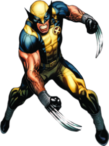

Wolverin's Powers
Reasons to like Wolverine
Wolverine
Wolverine is a member of the X-men.
Films Wolverine has featured in
- Logan
- The Wolverine
- X-Men
- X-Men: The Last Stand
- X-Men: Days of future past
A list of Wolverine's Powers
- Healing
- Ages only slowly
- Can grow claws from fists (upgraded to metal)

Reasons to like Wolverine
- Nice to imagine living through the ages Wolverine has
- Hugh Jackman is a great actor (even when not singing and dancing)
- Got to love a grizzled loner hero
- Has a strong sense of morals, even if not always friendly
More information on Wolverine:
This is a wolverine, a real life mammal
Or click here for my own Wolverine (mammmal) information